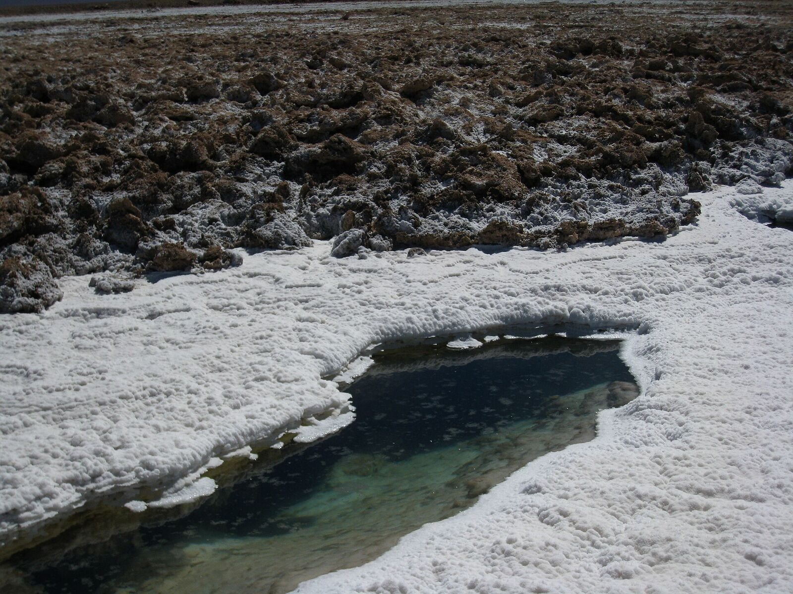

Tolar Grande: The Railway Village Turning the Puna's Otherworldly Landscapes into a Local Economy
Eight hours from Salta city, a community born of the Belgrano railway now guides travellers across the planet's third-largest salt flat, past saltwater 'eyes' sheltering the oldest life forms on Earth.

At 3,520 metres above sea level, ringed by salt flats, red rock and volcanoes, Tolar Grande is about as far into the puna as a village can be: 387 kilometres from Salta's capital, a drive of roughly eight and a half hours. It was born around a station of the Belgrano railway's C-14 branch — the line that climbs to the Socompa pass on the Chilean border — in the days when rail and mining kept the high desert busy.
The trains thinned out; the village stayed. And in the past two decades Tolar Grande has been quietly building a second economy out of the one asset the puna has in absurd abundance: landscapes that look like they belong to another planet.
The best known are the Ojos de Mar, the 'eyes of the sea' — small pools of intensely turquoise salt water that open in the white crust of the salt flat just outside the village, fed by water flowing down from the Serranía del Macón. The pools shelter living stromatolites, colonies of microorganisms of the kind that produced Earth's earliest known life. Scientists study them as a window onto the planet's beginnings; visitors simply stand at the rim and stare.
The third-largest salt flat on Earth
Beyond the village stretches the Salar de Arizaro, the third-largest salt flat on the planet, and on its far side rises the Cono de Arita — a near-perfect pyramid of dark volcanic salt some 200 metres tall, one of the most photographed natural forms in Argentina. Closer in are the rust-red badlands of the Desierto del Diablo, the dunes of El Arenal where sandboarders launch themselves downhill, and the wind-carved bends of Las Siete Curvas.
The horizon belongs to the Llullaillaco volcano, 6,739 metres high and sacred in the Andean world. Near its summit in 1999, archaeologists recovered the 'Children of Llullaillaco', three Inca mummies preserved for five centuries by cold and altitude — among the best-preserved archaeological finds anywhere in the world.
There is industrial heritage too. High above the salar sit the ghost camps of Mina Julia (5,505 metres) and La Casualidad (4,200 metres), sulphur operations abandoned decades ago, their dormitories and workshops still standing in the dry air — destinations now for travellers drawn to the puna's mining past.
A community economy
What makes Tolar Grande more than a viewpoint is who runs the visit. Lodging is largely in family-run hospedajes; local guides accompany the 4x4 crossings; the municipality regulates access to the fragile Ojos de Mar. Income from travellers stays in the village, supplementing railway pensions and municipal work.
Tourism here is still measured in thousands of visitors a year, not millions — the distances filter the crowds. But the same improved roads that serve the mining projects of the western puna now also carry travellers, and operators in Salta city have made the three-day Tolar Grande circuit a fixture of their catalogues.
For a village the railway once threatened to leave behind, the equation has turned: the emptiness that made the puna hard to live in has become exactly what the rest of the world comes to see.